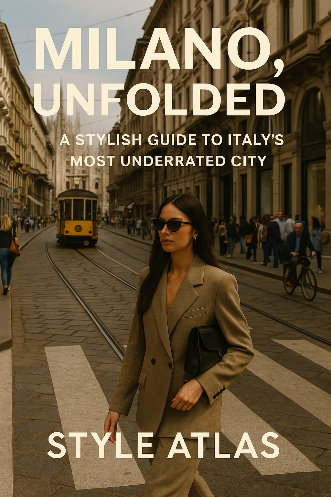
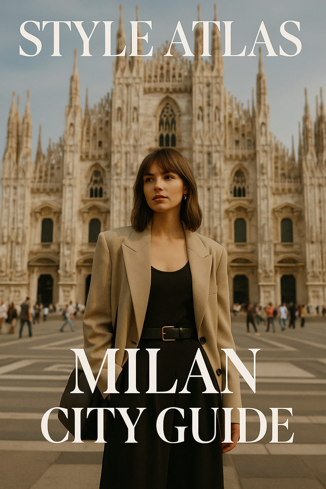
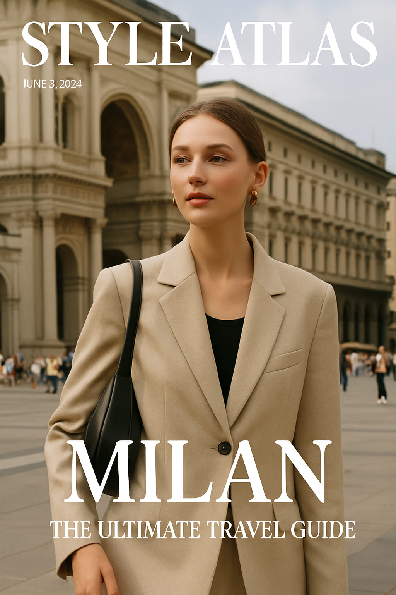
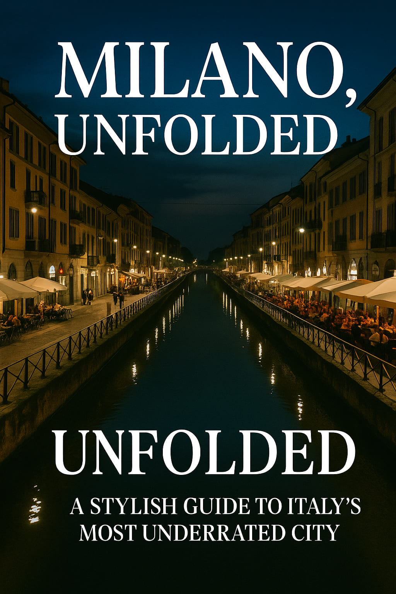
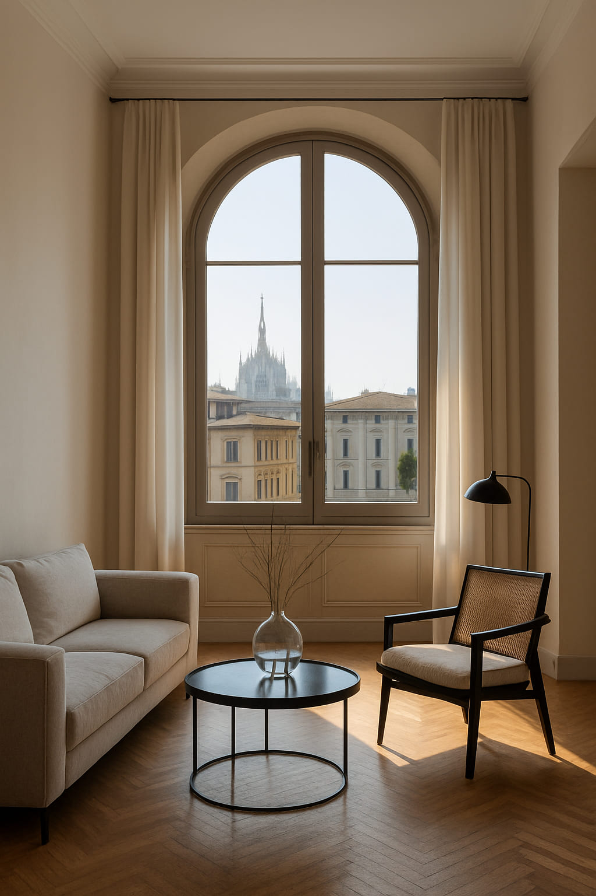

Milano, Unfolded: A Stylish Guide to Italy’s Most Underrated City
Forget what you think you know about Milan. Yes, it’s the capital of fashion. Yes, it’s home to glossy storefronts and style influencers. But beneath the glamor lies a surprisingly grounded, beautifully textured, and fiercely authentic city. Milan is not here to entertain you—it’s here to teach you how to move through the world with elegance, restraint, and an eye for detail.
“Milan doesn’t scream for attention. It whispers with style.”
Arrival: Enter the Industrial North
Unlike its southern siblings Rome or Naples, Milan greets you not with chaos but with rhythm. The pace is efficient. The architecture is rational. But then you look again and notice something: a 1930s tram glowing amber in the rain, a barista in leather loafers, a graffiti-scrawled courtyard revealing a secret wine bar. Milan hides its magic on purpose.
Your arrival should start at Stazione Centrale, not because it’s beautiful (it is, in an imperial way), but because it sets the tone. Milan is monumental and meticulous. From there, wander into Brera, where ivy climbs the façades and students spill out of art academies onto cobbled lanes.
The Neighborhoods You Need to Know
- Brera: Artistic and refined, filled with galleries, curated boutiques, and aperitivo bars that buzz quietly.
- Navigli: The canal district—less postcard-perfect than Venice, more alive with local rhythm, vintage shops, and dusk-lit waterside aperitivos.
- Porta Romana: An understated gem with warm residential vibes, traditional trattorias, and contemporary design spaces.
- Isola: Young, creative, and bold. Think brutalist architecture meets streetwear boutiques.
Each district feels like a different city. The Milanese know how to compartmentalize beauty, function, and identity into zones—like a perfectly tailored wardrobe.
Coffee, Aperitivo, Repeat
Morning begins with espresso at the bar—not sitting, not chatting. It’s a ritual of efficiency. Caffè Pascucci near Porta Venezia or Marchesi 1824 (yes, the Prada one) offer a masterclass in restraint and taste. Order a cornetto and observe the locals: minimalism, neutral tones, a flash of gold jewelry or statement eyewear.
Evenings in Milan belong to aperitivo. It’s not just about drinks, it’s a social choreography. From the iconic Nottingham Forest (quirky cocktails) to the sophisticated Terrazza Aperol overlooking the Duomo, every venue has a personality. But some of the best aperitivos happen in hidden courtyards—quiet and candlelit, found only by those who wander.
The Fashion (Without Shopping)
You don’t need to buy anything in Milan to understand its fashion power. Just walk. Via della Spiga is a catwalk of restraint. The Galleria Vittorio Emanuele II is a temple of old-world luxury. But the real lessons are in how Milanese people move—head high, shoulders relaxed, knowing they’ve already won the style game.
“Style in Milan is like architecture—structured, considered, and never accidental.”
Design as Daily Life
Milan’s soul lives in design. Even in the tiniest espresso bar, there’s a sense of proportion and function that feels elevated. Visit Fondazione Prada or the Triennale Museum for curated immersion. Then visit Rossana Orlandi’s gallery-store to see how even a doorknob can be a statement piece.
If you happen to visit during Salone del Mobile or Fuorisalone (Design Week), the city becomes an open museum. Courtyards become installations. Furniture brands host cocktail parties. Art spills into the street. Milan becomes a living editorial spread.
Don’t Skip the Quiet Icons
- Villa Necchi Campiglio: A rationalist dream and backdrop for the film I Am Love. Quiet, impeccable.
- Cimitero Monumentale: Not morbid, but sculptural. A city of its own in marble and bronze.
- Chiesa di San Maurizio: Milan’s Sistine Chapel—hidden and breathtaking.
These places aren’t “Top 10 Must-Sees.” They’re mood-setters, deeply Milanese in their silence and beauty.
Where to Stay (and Feel It)
Forget big chains. Look for design-forward boutique hotels or even apartments in buildings with iron gates and overgrown gardens. Areas like Brera and Porta Romana are walkable, central, and give you a sense of neighborhood life. Milan doesn’t need luxury to feel luxurious—it needs intention.
The Mood of the City
Milan is not loud. It doesn’t beg. It suggests. It’s a city for people who notice the way light falls on stone, who understand the importance of a good coat, who prefer a strong espresso to small talk. It rewards the observant. And it leaves you a little more composed than it found you.
Whether you’re here for fashion week, design fair, or just passing through, Milan isn’t trying to seduce you. It simply is. And that, in itself, is seductive.
“Milan doesn’t teach you how to live—it teaches you how to refine your way of living.”
Words by Style Atlas